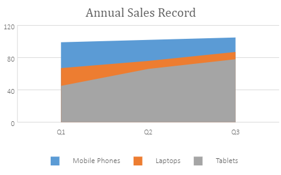
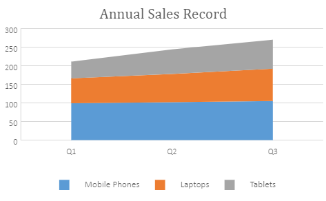
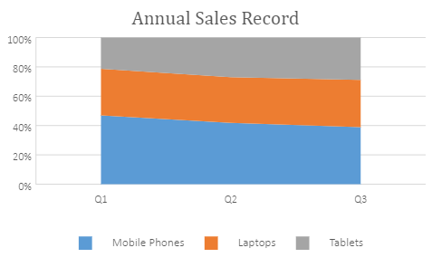

An Area chart is extensively used to display the contribution of each of the data values to a total over time. Typically, this chart is ideal when you need to show the plot change over time and depict the total value across a trend by showing the sum of the plotted values.
The data arranged in columns or rows of a worksheet can be plotted in an area chart.
SpreadJS supports the following types of area charts. In the examples shown below, the annual sales record for Quarter 1, Quarter 2 and Quarter 3 for different categories of gadgets: Mobile Phones, Laptops and Tablets is depicted in different types of area charts.
A clustered area chart depicts the data series as colored regions that help in comparing the values of multiple series for the same data point. This chart shows trends over time.
An image of a clustered area chart is shown below:

A stacked area chart depicts data series as stacked regions with different colors that help in performing comparisons between multiple series for the same data point. This chart shows the trend of the contribution of each value over time or other categorical data.
An image of a stacked area chart is shown below:

A 100% stacked area chart depicts the series of data points with positive and negative values shown over time to reveal values of multiple series for the same data point. This chart shows the percentage that each value contributes over time or other categorical data.
An image of a 100% stacked area chart is shown below:

This code shows how to add different types of area charts in a spreadsheet.
| JavaScript |
Copy Code
|
|---|---|
var chart_area, chart_areaStacked, chart_areaStacked100, sheet; window.onload = function () { var spread = new GC.Spread.Sheets.Workbook(document.getElementById("ss")); sheet = spread.getActiveSheet(); sheet.suspendPaint(); //prepare data for chart sheet.setValue(0, 1, "Q1"); sheet.setValue(0, 2, "Q2"); sheet.setValue(0, 3, "Q3"); sheet.setValue(1, 0, "Mobile Phones"); sheet.setValue(2, 0, "Laptops"); sheet.setValue(3, 0, "Tablets"); for (var r = 1; r <= 3; r++) { for (var c = 1; c <= 3; c++) { sheet.setValue(r, c, parseInt(Math.random() * 100)); } } //add area chart chart_area = sheet.charts.add('chart_areaClustered', GC.Spread.Sheets.Charts.ChartType.area, 250, 20, 600, 400, "A1:D4"); //add areaStacked chart chart_areaStacked = sheet.charts.add('chart_areaStacked', GC.Spread.Sheets.Charts.ChartType.areaStacked, 250, 480, 600, 400, "A1:D4"); //add areaStacked100 chart chart_areaStacked100 = sheet.charts.add('chart_areaStacked100', GC.Spread.Sheets.Charts.ChartType.areaStacked100, 250, 900, 600, 400, "A1:D4"); sheet.resumePaint(); }; |
|